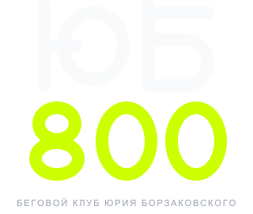
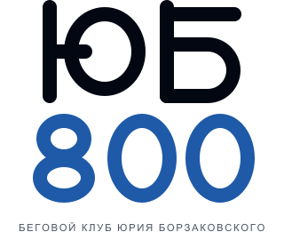
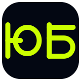
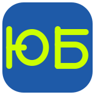
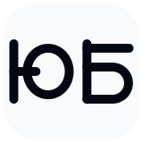

Бренд-борд · шрифтовой знак
ЮБ800
без символа
Монолиния, построенная на одной сетке: «Ю» — стойка, овал и перекладина; «Б» — стойка, верхняя планка и чаша; «800» — две петли и два овала. Шрифт не нужен: всё в кривых.
Основной знак
Горизонтальная версия для сайта, документов и соцсетей. «ЮБ» — бумага, «800» — лайм #CCFF00.
Версии
Светлая, синяя и монохромные. На белом «800» становится дорожкой #1E5AA8: лайм на белом не читается.


Иконка
Для favicon и аватара используем первые две буквы слова — «ЮБ». Это не отдельный символ, а кроп логотипа.



На светлом фоне — графит. Лайм не используем для текста на белом.Геометрия
Все буквы построены на одной сетке 100. «Ю» и «Б» — штриховые формы; «800» — овалы и две петли. Поэтому знак можно пересобрать в любом размере без потери пропорций.
Цвета
#030712Графит · фон
#F9FAFBБумага · текст
#CCFF00Лайм · «800» и акценты
#1E5AA8Дорожка · светлая версия
Правила
Минимум 16 единиц (толщина линии) вокруг слова. Ничего не заходит в это поле.
Полный горизонтальный — от 320 px. Компактный — от 120 px. Иконка — от 32 px.
Не растягивать, не наклонять, не менять толщину линии, не добавлять тени и градиенты, не ставить на пёстрый фон без подложки.
На графите — #CCFF00. На белом — #1E5AA8. На синем — #CCFF00. В монохроме — один цвет.